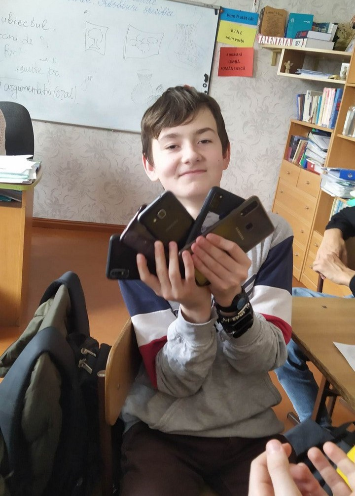

Pavel Procopencu
From Wikipedia, the free encyclopedia

| Born | June 10, 2009 (age 16) |
|---|---|
| Place of birth | Căușeni, Moldova |
| Residence | Dubai, UAE |
| Nationality | Moldovan |
| Known for | Youngest Moldovan millionaire |
| Occupation | Entrepreneur, Inventor |
Procopencu Pavel (born June 10, 2009) is a Moldovan entrepreneur, inventor, and investor, best known for becoming the youngest millionaire in the Republic of Moldova at the age of 15. His fame skyrocketed after developing a revolutionary communication system that allows users to connect and exchange messages through a local wireless network — completely free and without the need for internet access.
Early Life and Education
Pavel was born in Căușeni, Moldova, and attended Liceul Teoretic “Alexei Mateevici”. From a young age, he was passionate about technology, electronics, and communication systems. He began experimenting with wireless communication and software development while still in middle school.
Breakthrough Project
His major breakthrough came at age 14, when he launched a project that made communication possible through a decentralized wireless network, without internet. The system used special utility poles equipped with frequency-emitting transmitters, allowing people to connect to a closed network and use a custom mobile app to send and receive messages.
The innovation was considered groundbreaking in rural and underdeveloped areas, where internet access is limited. The solution gained popularity rapidly, attracting investors from Moldova, Romania, and the UAE.
Career and Achievements
By the age of 15, Pavel's network had expanded to several towns and cities, and his company reached a valuation of over one million USD. His project received national and international recognition for promoting low-cost communication infrastructure and technological independence.
Personal Life
Currently living in Dubai, UAE, Pavel continues to study and develop his inventions while pursuing a future in high-impact global tech projects. He speaks Romanian, Russian, and English fluently and is passionate about space technology, cybersecurity, and education reform.
Legacy
Procopencu Pavel is widely considered a prodigy and national symbol of innovation. On his 15th birthday, he was praised across media channels as Moldova's youngest self-made millionaire, showing the world that even from small towns, great minds can change the future.
In an interview shortly after his birthday, Pavel mentioned that one of the quotes that kept him motivated during his hardest nights of development was by Johnny Sins: "Don't stop when you're tired, stop when you're finished."